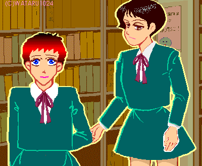
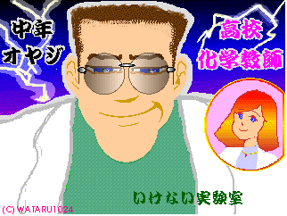

作：ＷＡＴＡＲＵ1024
３．「春は名のみの春が行く」

御決まりの早春の恋愛イベントが過ぎると、徐々に春めいてきた。 「あきら」と「秋彦」、二人の生活もすっかり、落ち着いていた。「あきら」の身体で 生活していても、あきら（秋彦）は普段、違和感を感じない程に馴染んでいた。 ただ、二度目の月のモノの時は特別で、やはりまだ慣れることが出来なかった。当たり 前の女の子であっても、そうすぐに慣れてしまうものではないのだから、つい先月まで男 だった彼女には無理というものだ。 あきらとゆかりは二人でチョコレートを交換するという、すっかり百合モードで盛り上 がっていたが、秋彦も何やら大騒ぎを起こしていた。 「あきら！ おまえ、三年の先輩とキスしたって評判になってるじゃないか。しかも、 フッたとか傷物にしたとかとんでもない話になってるぞ。何やってんだよ！」 放課後の学校というのに、あきら（秋彦）は我を忘れて、元の自分の身体に掴み掛かっ ていった。一応あたりに人が居ないことを確認しての事だが、ようやく捕まえた秋彦だっ た。すっかり興奮している。 つい先程クラスメートに聞いたのだが、話が話だっただけに、矢も盾もたまらず秋彦の 姿を探して走り回っていたのだ。 「なんにもしてないよ、別に三年の阿部さんとはデートしただけ。チョコレート貰った から、そのお礼も兼ねて」 あきら（秋彦）の勢いに、さすがに押され気味で秋彦（あきら）が答える。 「本当にそれだけか？」 かなり本気で怒っている。秋彦にもそれは充分伝わっていた。 （しまったー、本気で怒らせちゃったかなー。この分だと相手のところに確認に行きかね ないなー） 「……キスはした」 「！ そ、それでふったの！？」 「ふってないよ、最初から一回だけ付き合って欲しいって言われてデートしたんだよ。 キスって言ったって、ほんのちょっと触れただけみたいな、可愛い奴だってば」 「その、能天気サが危ないンだってば。これがきっかけであっちこっちに愛人もどきを 作るんじゃないだろうな。ハーレムつくりたいなんて言って。そんなこと俺が許さないか らな……」 怒涛の如く、オジン臭さの入った説教が女子中学生の口から止めどもなく溢れ出して いった。元の「秋彦」以上の攻撃だ。 「そうやって、プレイボーイを気取って何人も女の子を相手にしていると、男らにだっ て、恨まれんだぞ。解ってんのか」 いくら少々こちらに非があっても、そこまで言われては秋彦も納得できない。 「もう、なんだよ。そんなに怒るほどのことじゃないよ。男らにだって、一緒にデート したりしてんだから恨まれるか！ 第一自分はしっかり彼女作ってるじゃないか、かなり親密な不純同性交友ナンじゃない の？ こっちはおねーさまに唇奪われただけだっていうのに」 「なんだよそれ、どういう意味だよ」 「秋彦はいいよね、好きな子と好きなこと出来てさ。あたしなんか、置いてけぼりじゃ ん。さすがに彼氏は作る気になん無いし、彼女は作るな！ だし。少しぐらい羽目外し たっていいじゃない！」 後半は結構大声になってしまっていた。答えるあきら（秋彦）の声も大きい。 「あきら！」 そう応えた瞬間、すぐそばの扉が開いて、何かが飛び出してきた。 「君たち！ 今の話はどういうことなんだ！ 君たちは、入れ替わっているのか！」 化学教師のジングウだった。 （（聞かれた！）） 二人は一瞬にして凍りついていた。 開いた扉は化学実験準備室のものだった。いつの間にか二人は化学実験室の前まで来て いたのだ。 ジングウが二人を見つめ、目の色を変えて立っていた。 両手を大きく振り上げてかなり危ない感じだ。 「神よ、ありがとうございます。私の実験は成功していたんだー！」 「「えっ！？」」 それを聞いた瞬間、二人の視線が、ジングウの一気に紅潮していく顔に吸い付けられて いった。 二人がジングウから聞き出した話はとんでもない内容だった。 ジングウは人格交換機の試作を完成し、動物実験から人体実験を繰り返していたと言う のだ。 本人の言によれば、神宮家は代々発明家の多い家系なのだそうだ。もともとは祖父が研 究していてお蔵入りにしたモノを、完成させるために何年も前からジングウが研究を続け てきたものだった。 人体実験の被験体は皆、生徒達だったという。 動物実験では成功しているように見えるのに、異種族で交換しているわけではないか ら、確実に確かめることが出来ない。そこで密かに何度か人体実験を行っていたが、成功 していなかった。 「最初はまあ、理由をつけて、ここで手伝いをしてもらうついでに、被験体になっても らっていたんだ。もっとも、秘密が漏れるのも避けたかったから、理由は説明しなかった し、記憶処理もするつもりだったけどね」 そもそも、人体実験をすること自体がとんでもないのだが、ジングウにとって幸いなこ とに、この実験で被験体は、前後の記憶がなくることが解った。 人間での人格交換は不可能なのかと、そろそろ諦めかけていた。そこで最後の実験体と して、双子の二条兄弟に目をつけていた。いままで、兄弟と言うのは、試みていたが、双 子というのは被験者の中には居なかったのである。出来れば一卵性双生児でも試したかっ たそうだ。 そしてあの日、運悪く狙い通り、通り掛かった彼ら双子に、声を掛けたというのだ。 神宮は片づけを手伝ってくれという口実で二人を誘い、お茶とお茶菓子で礼をしたが、 そのお茶には薬が入っていた。 そして実験は行われた。 そして成功した。 後は二人の知る通りだった。 だがジングウは、まだ実験が初めて成功したことに気付かなかった。 実験の処置直後の結果では、それまでの被験体の状況と変わらず、二人の様子に異常も 違和感もなかったので、また失敗かと落胆していたという。 二人の記憶は実験のショックのせいで、実験の前後の部分が抜け落ちていた。 「君たちの場合、最初に意識を回復した実験直後では、人格は入れ替わってなかったん だよ。もう一度、意識を失くしてからだな、それが何故か理由が解ればな」 後で、保健室で目覚めたときには入れ替わっていたのだ。 「ちょっと先生、それって、かなり、やばいんじゃないですか？」 秋彦（あきら）がさすがに蒼ざめた顔で聞いた。二人とも、ジングウの話したあまりと いえばあまりの内容に衝撃を受けていて、まともな反応が出来なかった。 科学実験準備室の奥の簡単なテーブルセットに、三人は付いていた。 「んー、そうかな？ バイト代は出していたんだがね」 あきらと秋彦の向かいに、二人を眼を細めて見ているジングウがいる。まるで可愛い孫 の成長した姿を喜ぶ祖父か、国際ドッグコンテストで優勝した飼い犬を眺める飼い主のよ うだ。中年オヤジの癖に好々爺が入っている。但し眼を除き。 「そういう問題じゃなくて。基本的人権とか、プライバシーとか」 声に力が入っていない。秋彦はなにか、相当恐ろしいものと同席してしまっているよう な気がしてくる。 「ああ、問題ないよ。なにも起こってないだろう。私は実験以外のことは一切していな いからね」 「だからそういう問題じゃないでしょ！ 本人の承諾も得ずに実験台にするのが問題な んです！」 たまりかねたように、あきらが声を挙げる。 「いいじゃないか、人類の叡知と科学の発展に協力できるんだ、名誉だよ」 「くっ！（このオヤジ、頭が腐ってる）」 ひたすら涼し気で嬉しそうなジングウに、あきら（秋彦）は言葉もなかった。 「と、とにかく！ 今すぐに、オレ達を、元に戻して下さい！」 「それは、できない」 ジングウが実にあっさりと、あきら（秋彦）に応えた。 話はややこしくなっていた。 実験が失敗したと思っていたジングウは、人格交換機の開発を一旦中断することに決 め、装置はあらから解体してしまったというのだった。データの整理も終えて、つぎの課 題に取り掛かっているところなのだ。 現在は霊体通話機なるものを計画中だというが、それがどういうものかは二人にはどう でもよかった。 ジングウは二人が告発すると脅しても、どこ吹く風という顔で応えた。 「私に協力するなら、元に戻せるかも知れないなぁ。しかし、協力してくれないなら、 それまでだねぇ」 「脅迫するんですか」 「それは、人聞き悪い。私は何かの事故で入れ替わってしまったらしい君たちを、 ひょっとしたら元に戻せるかも知れない、と言っているだけだよ」 「って、あんたがやったんでしょうが！」 あきらが声を荒げて言った。 「さあ？ 憶えていないなぁ」 「そういうことですか」 こちらは冷静な秋彦（あきら）が応えた。 もちろん証拠は何一つないのである。先程、本人の口から聞いたというだけでは、なん の決め手にもならない。そもそも被害を受けたと言っても、加害者のジングウが認めて協 力しないかぎり、検証できない事件なのだ。親と一緒に警察に行ったとしても、向こうが それをそのまま、信用してくれるとは限らない。まごまごすれば、親だって安心できない かも知れない。 ジングウとしてはつまり、今のままでいいなら、協力しなくてもいい。自分は何にも困 らないと言っているのだ。 この事件で困っているのは、当事者の二人だけであり、もっと厳密に言えば、本当に 困っているのは「秋彦」だけなのである。 「そろそろ、教師というのにも飽きてきたし、辞めるいい機会かな」 「冗談じゃないですよ、そんなの！ 辞める前にオレ達を元に戻して下さい」 「まあ、冗談は置いておいてだね。確かにやったのは私だが、実験は失敗してるんだ よ。装置も解体して、今はない。元に戻せって言っても、右から左って言うわけにはいか ない。神様じゃないんだから。 ま、私を告発しようなんて思っても、無駄ということは解ってくれたかな。その上で積 極的に協力してくれると嬉しいんだがなぁ。私だって研究を完成したいのは山々なんだか らね」 「解りました。協力すれば、本当に元に戻せるんですね？」 「可能性は多いにある、と思う。なにしろ君たちだけが、入れ替えに成功しているん だ。他では全く駄目だったのにね。是非、研究させて欲しい」 「おい、あきら！ こんなキチガイに協力するのかよ」 可愛い顔の女の子が、乱暴な口調でそう言い放つ。 「秋彦が、元に戻りたがっているんだろ。戻りたくないの？」 いくらか冷静に少年がそれに応える。彼は悔しそうな表情を浮かべていた。 「それは、……戻りたい」 あきらの顔が微妙な表情を浮かべた。怒りがぶつかる先を失って、宙に浮いてしまって いる。 「じゃ、協力するしかないだろ」 「……解った、ボクも……協力するよ」 「というわけで、いいですか」 「よろしく頼むよ」 「うーん、しかし、情けない中年おやじの正体が、あんなマッドな発明家とは知らな かった」 と秋彦（あきら）。 「まさか、本当に人体実験にされていたとは……、しかもジングウがほんとに黒幕か よー。うえー。ぞっとするー。冗談じゃない」 と、げっそりした表情で返すあきら（秋彦）だった。 それからは元に戻るために、ジングウ言うところの人格交換機の装置を組み立てる手伝 いやら、その他の雑用やらが二人の放課後の仕事になっていた。場所は化学実験準備室で ある。 もう一つ意外な事実が判明した。 学校でもちょっと人気の保健室のノリちゃんこと、木村典子先生が実はさえない中年の ジングウと付き合っているというのである。あきらと秋彦は最初、ノリちゃんも脅されて いるのでは、と心配したが、案に相違して、押し掛け女房ならぬ押し掛け研究助手（兼愛 人：本人談）だというのだ。 学校内で生徒達を相手に人体実験を続けて居たのにも拘らず、なんの噂にもならなかっ た理由がこれだった。 実験後意識を失った生徒は保健室に運んでおく。そして、素知らぬふりをしていれば、 それが異常な頻度で起こっている事件だとは、なかなか気が付かれない。当然、日誌に も、その件についてはほとんど記されていない。 怪しい中年オヤジのジングウはともかく、学校のオアシス保健室の主、サボり少年、サ ボり少女の心の友、あの童顔が愛らしいノリちゃん先生が、なんと、悪魔の手先だったと は！ 「世の中まちがっとる」 と、思わず呟く、あきらと秋彦だった。 が、しかし、世界がなんの異常もなく日々これ平穏ならば、彼と彼女が入れ替わること もなかったであろう。ことほどさように、世界はへんてこりんで愉快な出来事に満ちてい るのだ。 「だって、ジングウ先生って、面白いんだもん」 と、先生モードからプライベートモードにシフトしたノリちゃんが嬉しそうに言った。 自分では化学実験準備室での作業を手伝わなかったが、時々あきら達がいるところへ様子 を見に来るのだ。 「先生、もしかして、ジングウが浮気しないように見張りに来てルンですか？」 と秋彦（あきら）が言うと、彼女はしれっとして、答えた。 「やっぱ、わかるー。へへへ、ちょっとね、あまり学校じゃ、親しくしたりできないか らさ、つい妬けちゃって」 「「ゼッタイ、心配ないです！」」 「そういう言い方は……」 力いっぱい否定する二人に、ぶつぶつ言いながらも、ノリちゃんはお茶だけ飲んで帰っ ていくのだった。 ここがジングウの密かな実験室になっているとは、校長だって知らないだろうと二人は 思った。秋彦の方は部活の後か、その合間になるので、あきらの方が手伝う時間は多かっ た。おかげで、ゆかりと過ごす時間が急に減り、彼女は欲求不満になっていた。 手伝いながらも、文句を言いたくなるが、そうそう出せるものではなかった。 「だいたい、先生はなんで教師なんてやってるんですか？ 信じられないですよ」 かわりに文句ともつかない、質問をする。「お前みたいな教師なんて、信じらんねー、 サイテー」と言う代わりである。 「そりゃ、君たちみたいな最高の被験体に、たまに出会えるからに決まっているじゃな いか」 「「オレ達はあんたのモルモットかい！」」 あきらと秋彦が同時に応えていた。 聞くんじゃなかった……。あきら（秋彦）は心底、後悔した。 化学実験準備室でのジングウの手伝いを始めてから、秋彦（あきら）はあまりデートに 出掛けなくなった。時間が無いせいでもあるが、本人も気が乗らなくなってきたらしい。 夜の打ち合わせでも、そんなセリフが出てきた。 「あー、女の子との普通の会話がなつかしーよー」 「あんなに喜んでいたくせに。今だって、いつも女の子連れでしょ」 「それは今でも楽しいんだよ、もちろん。でも、こうなんて言うかさ、ごく普通の女の 子同士の会話？ これがないんだよね。 男同士って、結構違うんだなーって、最近、気が付いちゃってさ。ましてや、女の子っ て、男と居るときの顔とか態度っていうのがあるでしょ。まあ、それも、男の立場からす れば、可愛いンだけど、時々、すっごいウザくなるんだ。だから、オレだって、たまには 女の子同士で気楽にキャンキャンしたいじゃん」 それで「オレ」はないだろ、と思いつつ女になってしまった兄は、男になってしまった 妹に初めて同情を感じた。 「まあ、そうだね。たしかに女の子同士の感覚ってちょっと男同士のつきあいじゃない 感じがあるね」 「秋彦は『あきら』をうまくやってるじゃん。クラスの佳代や真奈とも仲いいままみた いだし。それと吉沢との関係ってどう違うの」 「ああ、ゆかりのことは『あきら』になる前から、意識してたしね。クラスのほかの子 はそうだなー、特に最近は異性を感じなくなったなー。なんか親しいハトコって感じ？」 「なにそれ？」 「さあ。うーん、つまりさ男の友達感覚よりなんか、ちょっと身内っていうか、家族っ ぽい感じがするんだよね。中にはそれが嫌って子もいるんだけど」 「あたしも、あんまりべたべたはいやだったなー」 「あきらの友達はそんなにべたべたしないタイプだから、ボクも普通に出来たんだと思 うよ」 「あーん。彼氏じゃなくて女の子で、佳代たちと帰り道に寄り道してだべりたいー」 「そろそろ、完成するんだろあれ」 「そうだね。あ、そういえば、あんた達の事って周りの子達は、どのくらい知ってん の」 「え？ 何？」 「ゆかりとあんたのこと、百合って事よ」 「え？ ゆ、百合って、あ、そうか。うん」 あきら（秋彦）は、急に顔を赤らめて、言葉をつまらせた。 「元に戻ったら、どうすんの？」 「ああ、うん」 そのことは、あきら（秋彦）の胸の中で、ずっと、引っ掛かっていた問題だった。 「周りの子は普通にしてるけど、ゆかりがそのタイプだってことは知ってる子は、知っ ていたみたいだね」 「うそ、そうなの？ あたしは知らなかった！」 「うん、で、ちょっと、佳代にはこないだ、揶われた。ボクのことをゆかりがオトし たって、評判だって。冗談だと思うけど。ただ、彼女はクールでハンサムだからあまり騒 がれないみたいで」 「あちゃー。そりゃもう、周知の事実って奴だわ」 「そうなのかな。う、それは悪かった？」 「まあ、いいよ。べつに彼氏にしたい男が居たわけでもないし、元に戻ったらレズは卒 業しましたって、言ってればいいし。でも、ゆかりはどうすんのよ」 「秋彦」になりきっていた「あきら」も、こうやって二人で話していると端々に女の子 の言葉遣いが出てきていた。 さらに今は、女の子の言葉で、元の「あきら」の立場で、彼は聞いているのだ。 「やっぱり正直に言ったほうがイイと思うんだ。どうせ他の人にばらしたって信じて貰 えるような事じゃないだろう？ だからこそ、ゆかりには全部本当のことを言っておいたほうがイイと思うんだ。 でないと、あきらが元に戻ったら、いきなり訳も解らずふられてしまうわけで、それは かわいそうだよ」 「まあ、そうだね」 「今度話すよ」 「そっか。ねー、あ、き、ら。あんた、可愛いよー。なるほど、男子が騒ぐ訳だ。元本 人のあたしがみても、可愛いと思うもん、うん可愛い、お兄さんが御褒美を挙げよう」 秋彦（あきら）が、あきら（秋彦）の首に腕を回し、強引に抱き寄せると頬にキスをし た。それは、よく、双子の妹のあきらが、兄の秋彦に対して最高に機嫌がいいときにして いた行為だった。 あきらが秋彦に、秋彦があきらに入れ替わってしまってからは、ほとんどそうしたこと はしていなかった。秋彦になったあきらに、かなりの照れがあったのだ。 何しろ抱きつく相手が自分なのである。しかも現在の自分は男の身体なのだ。 毎朝の現象にはすっかり慣れていたとはいえ、まだ、男の生理をすべて消化出来て居る わけではなかった。 「莫迦」 あきらの中の兄が妹に優しく応えていた。 そろそろ桃の節句が迫るころ、ジングウはようやく、あきら達にいい知らせを伝えた。 「人格交換機の再作製も後少しで完了する。実験は明日中には開始できるだろう」 あきらは既にゆかりにすべてを話す決心をしていた。 「ゆかり、話があるんだ。ちょっといいかな」 その日の放課後、かなり緊張した面持ちで、あきらがゆかりに声を掛けた。 「最近、あきらったら、何だか忙しいみたいじゃない」 ゆかりがちょっと拗ねたような風情で答える。その様子にあきらは、胸が苦しくなって しまった。 「あー、…ちょっと秋彦と一緒に、ジングウの手伝いをすることになっちゃって」 あきらは俯いて言い訳を言う。 自分たちのややこしい状況を、ゆかりに説明しようと思った。 しかし何から説明したらいいのか、あきらにも解らなかった。簡単に信じてもらえるよ うな内容ではない。 適当なところへ落ち着くと、あきら（秋彦）は決心して口を開いた。 「あの！ あのさ、ゆかりはいつからボクのこと気になるようになった？」 「えー？ なに急に。年明けてちょっとくらいからかな。なんで？」 「それ以前は特に意識してなかったの？」 「うん、それが不思議なんだよネ。特にきっかけって言う程のものもなくてさ。今まで なんてこと無かったあきらが、急に気になるようになったのよねー。ほら、突然おとなし くなって、男子からラブレターを貰い始めたじゃない。あのころからかな」 「そうだよね。そうだと思った。あのさ……、ボクはね、ボクは……本当はあきらじゃ ないンだ」 少し口ごもりながら、小声でそう言ったあきらの言葉を、ゆかりはきちんと聞き取って いた。そのまま後が続かずに黙ってしまったあきらだが、ゆかりには彼女の言いたい事が なんなのか、さっぱり見当が付かなかった。 「どういいうこと？」 ゆかりが穏やかに聞き返すとようやく、あきらも話の続きをする決心が付いたようだっ た。 「ボクは……、オレ、本当は秋彦なんだ。双子の兄の。ほんの一月半前までオレは秋彦 だったんだ！」 あきらは小さく叫ぶようにしてそれだけ言うと、再び貝のように静かになった。 訳の解らないあきらの告白に、ゆかりは返す言葉がなかった。 しばらくして、ゆかりが言った。 「あのさ、始めから説明してくれないと解らないよ」 あきらの身体がごく普通の女の子であることについては、ゆかりにも確信があった。だ から、「あたしジツは男なんです」という意味ではないだろうと思った。双子の兄とあき らでは、二人は顔も違う。秋彦のことは顔だけなら結構前から知っているし、最近、入れ 替わってもバレないようなそっくりな双子ではない。 ゆかりに促されて、あきらがぽつりぽつりと話し始めた。 「最初は気がついたら保健室だったんだ……」 一月半前の放課後から始まった出来事について、親を除けば初めて、直接の関係者以外 に話したのだった。 「それでこの間、ほんの偶然から、ジングウの実験が原因だった事が解って。ここ数日 は元に戻るための実験の準備をしていたんだ。それも出来上がったみたいだから。ジング ウはこれでたぶん、元に戻れるって言ってた」 「それ全部、本当なの？」 「うん、あとでボクになってるあきらにも説明させるよ。なんならジングウにも話して もらう」 「ちょっと、あたしには解らないけど。別れたいなら、そう言ってくれればいいんだ よ」 「違うよ！ 今のこのボクは、本当にゆかりのことは好きなんだ！ だから、男の秋彦の身体に戻ってからも、出来れば付き合っていきたいんだ！」 ゆかりはじっと黙り込んでいた。非現実的な話をしているあきらを、信じていいものか 迷っているようだ。 そして、それが真実だったとして、どうしたらいいのか悩んでいた。 あきらの話が真実ならば、ゆかりが愛したのは女の子の身体に男の子の心を持った少女 だったということになる。その女の子には男っぽさなんか感じることはなかった。けれ ど、確かに普通の女の子とは違う何かを感じてはいたのだ。 「本当は、二条……秋彦君、なの、あなたは？」 「うん」 「一月ちょっと前にあきらと入れ替わったのね」 「うん」 「秋彦君の中には本当の二条あきらが居るのね」 「うん」 「そうかー、確かになー。別にそれまで二条のこと、なんとも思ってなかったし、急に 大人しくなって話題になってたから、気に留めただけだったのに。……こんなに好きに なって……なんでって、思ってたんだけど。そういうこと？」 いつの間にかゆかりの声が震えていた。 「そう……なのかな」 答えるあきらの胸にも迫るものがあった。もう目の前が滲んでいた。 「あたしの好きな、あきらはいなくなっちゃうの？」 「……うん、今の、このボクはいなくなる。この心で秋彦の身体。この身体で元のあき らの心になるんだ」 「あたしが、そのままでいてって言っても、駄目？ 秋彦君の方は、今のままでもいいって言ってるんでしょ？」 「……ゴメン。ボクは、やっぱり男なんだ。それに妹もいつまでも男にさせては置けな いよ」 そう言う彼女は男らしさとはまったく無縁で、その双眸から見事なまでの涙を流してい た。「可憐な乙女のいじらしくも儚げな涙の告白」といった風情だ。 「あたし、あきらのこと、あなたのこと、きっと今のようには好きでいられないよ」 「ボクはきっと、もっと好きになるよ」 「きっとダメよ」 そう応えるゆかりの目にも涙が浮かんでいた。 「ボクはずっと前から吉沢ゆかりって女の子のことが気になっていたんだ。だから、 きっともっと好きになるよ」 「莫迦」 ゆかりは眼に涙を浮かべたまま、あきらの頭を抱き寄せた。 そして、桃の節句の頃、あきら（秋彦）の心と秋彦（あきら）の心を入れ替える人格交 換実験が行われた。 二人は今回もほぼ同時に目を覚ました。 どちらも状況がよく掴めていないらしい。 ジングウとノリちゃんの二人とも、その側に揃っていた。 「あれ？ 実験はどうなってんの」 秋彦が身体を起こしてそう言うと、並んだベッドに身体を起こす女の子の姿が目に入っ た。その女の子も同時に口を開けた。 「あきら？」「秋彦？」 二人とも、はっとして自分の身体を見た。秋彦は手を胸にやり、咽喉をさわった。あき らは胸に触れると顔に手を当てた。 「おれ？」「あたしー？」 「「実験、うまくいったんだ！」」 二人は綺麗にハモるとジングウとノリちゃんのほうをみて叫んだ。 「「やったー！」」 ジングウがにやりと笑って言った。 「成功したな」 しかし二人にはその声は耳に入らなかった。 今回も二人には実験前後の記憶がなかったが、入れ替わりは完璧に行われていた。た だ、やはり処置の直後は入れ替わっていなかったらしい。 実験データや観測結果の心配はキチ○イ発明家とその助手の仕事だ。 翌日は二人とも、学校を休み、それぞれ、元に戻った自分自身の身体をのんびり満喫し た。両親も心底驚くと同時に、ほっとしていた。どうもまだ、両親は彼らが入れ替わって いたことについて半信半疑なのだった。しかしとにかく二人が、元通りになれたと変にな りそうなほど喜んでいるので、なるほど、事実入れ替わっていたのかも知れないと、思っ た次第だった。 さて、男に戻れた喜びもつかの間、秋彦には深刻な試練が待ち構えていた。 翌日の放課後。 「さっき、あきらと話したの。なんだか、ちょっと信じられないんだけど。あきらも、 ……二条？ 彼女も同じ事言ってた」 「うん、あきらとして、ゆかりと付き合っていたのはオレ、っていうかボクなんだ。な んか変だね」 「秋彦」として、ゆかりと向かい合うのは初めてだったのだ。昨日までは異性のよう な、同性のような、不思議な関係でお互いを恋していた。今の自分は彼女にとって紛う方 なく、異性だ。それを思うと哀しみが胸に湧いてくる。 「初めまして、かな」 「こちらこそ、初めまして、だね」 そう言うゆかりの顎が微妙にふるえていた。 「これからは、せめて友達として、付き合ってくれるかな」 今まで、ゆかりと話していた時とは違う、低い男っぽい声でそう言う。自分でも不思議 な感覚だった。クラスメートと久しぶりに教室で話した時には感じなかった、身体感覚の 違和感だった。 「あたし、まだ信じられないんだ。本当に二条君が、あのあきらだったの？」 「うん、あきらにも聞いたんだろ？」 「うん」 そのまま、すこし固まっているゆかりを秋彦はじっと見つめた。 成長期で、毎日どんどん延びているような背でも、やはりまだゆかりには届かない。彼 女の方が頭半分以上大きかった。 バスケットボールをしている姿が、とても綺麗だったゆかり。 秋彦は顎を震わせているゆかりの、その眼に浮かぶ涙に見蕩れていた。いつのまにかゆ かりは涙を流していた。 「ごめん。あきら、秋彦君。やっぱり付き合えない。あたし、ごめん」 覚悟はしていた。しかし、かすかな希望に賭けていたのであった。 「いいよ、前から解ってたことだし。握手しよう。あきらとは仲良く友達してくれよ」 「うん」 ゆかりは秋彦の手を軽く握ると、顔を合わせないまま、踵を返してその場から走り去っ た。綺麗な後ろ姿だった。 咽喉が痛かった。 「じゃあね、さよなら」 あきらにとっても、本来の彼女自身で、ゆかりと会うのは久しぶりだった。 クラスメートだから入れ替わる前は毎日顔を見ていたのだが、それは二月近く前のこと なのだ。 どうやら、別れを告げてきた泣き顔のゆかりを迎えると、あきらは優しく囁いた。 「秋彦のあきらがお世話になりました」 「ううん、こっちこそ」 涙で瞼が腫れているが、言葉はしっかりしていた。 「目線はあまり変わらないのにね」 「本当に今までのあきらじゃないんだよね、二条？ うん、結構違う、やっぱり全然違 う」 ゆかりがあきらの頬に手を伸ばした。 「何だか照れるね。ついこの間まで、秋彦の身体で会っていたのに」 あきらがこうやってゆかりと触れ合うのは初めてのことだった。ちょっとどきどきす る。けれどそれは恋のときめきではない。 「うん、そうだね」 ゆかりが哀しそうにあきらを見つめた。その眼は今、目の前にいるあきらではなく、そ の向こうにいる別の誰かを偲んでいた。 「ごめんね」 あきらはそう言う他なかった。 ゆかりはあきらの頭を胸に抱き寄せた。 「お願い、ちょっとの間でいいから、こうさせて」 「いいよ。飽きるまでそうしてなよ」 しばらくの間、静かな泣き声は続いていた。 ＜ つづく ＞

mail_to:ＷＡＴＡＲＵ1024